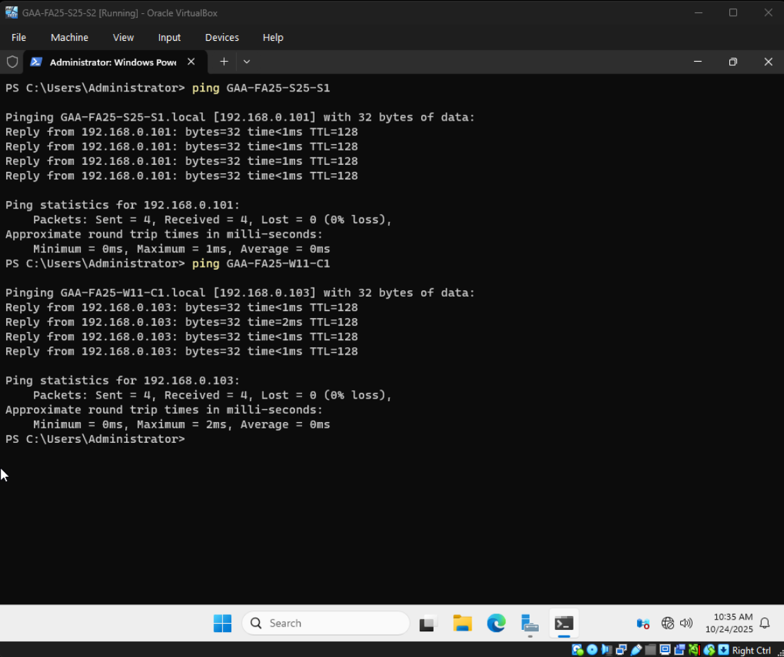

Managing a Virtual Network of Windows Systems
Description
I worked in VirtualBox to set up several virtual machines running Windows Server and Windows Desktops. I then managed each system to create a network in which they could interact with one another on. I also worked with the Widows Server tools to manage, set rules, and add users to other systems connected to the network.
What I Learned
- How to create virtual machines
- How to manage network settings
- How to use a terminal to perform network diagnostics
- How to use Windows Server
- How to manage other systems through a Windows Server system